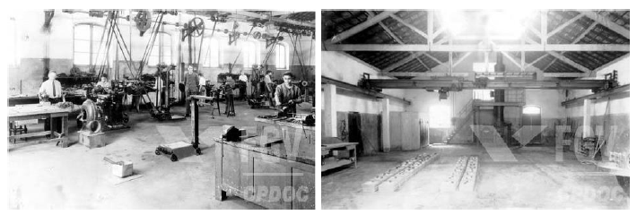
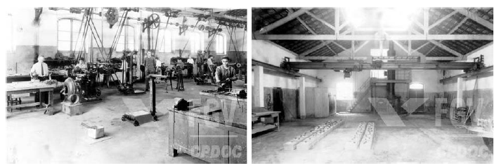
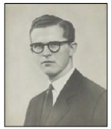
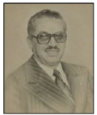

Como funcionou.
 

Em 1941 vigoraram uma série de leis conhecidas como a “Reforma Capanema” que remodelou todo o ensino no país, e tinha como principais pontos:
* o ensino profissional passou a ser considerado de nível médio;
* o ingresso nas escolas industriais passou a depender de exames de admissão;
* os cursos foram divididos em dois níveis, correspondentes aos dois ciclos do novo ensino médio: o primeiro compreendia os cursos básico industrial, artesanal, de aprendizagem e de mestria. O segundo ciclo correspondia ao curso técnico industrial, com três anos de duração e mais um de estágio supervisionado na indústria, e compreendendo várias especialidades.
Em 1942 nesse ano, através de um Decreto-Lei, introduziu-se a Lei Orgânica do Ensino Industrial, refletindo a decisão governamental de realizar profundas alterações na organização do ensino técnico. A partir dessa reforma, o ensino técnico industrial passou a ser organizado como um sistema, passando a fazer parte dos cursos reconhecidos pelo Ministério da Educação.
O Decreto nº 4.127, de 25 de fevereiro de 1942 transforma os Liceus Industriais em Escolas Industriais e Técnicas, passando a oferecer a formação profissional em nível equivalente ao do secundário. A partir desse ano, inicia-se, formalmente, o processo de vinculação do ensino industrial à estrutura do ensino do país como um todo, uma vez que os alunos formados nos cursos técnicos ficavam autorizados a ingressar no ensino superior em área equivalente à da sua formação.
A lei orgânica do Ensino Secundário, decreto-lei n. 4.244, de 9 de abril de 1942, se ocupou do ensino médio, que antes de sua reforma era visto apenas como uma preparação para o ensino superior, alcançado basicamente pela elite. A reforma Capanema tinha como objetivo mudar a visão do Ensino Secundário, conservando a divisão em dois ciclos: ginasial (4 anos de duração) e colegial (3 anos de duração). O colegial passou a ser dividido em duas modalidades, para os estudantes que iriam para o ensino superior Clássico e Científico. Para aqueles que tinham urgência no ingresso ao mercado de trabalho, havia o Ensino Normal e o Técnico dividido em: industrial, comercial e agrícola.
A Reforma Capanema trouxe a organização da Educação como um sistema, padronizado, em todo o território nacional, cujo fluxograma é apresentado.

Diretores

Isac Elias de Moura (Ago/1942 à Jul/1952)

Luiz Domingues de S. Marques (Out/1952 à Dez 1953)

Djalma da Fonseca Neiva (Mar/1954 à Dez/1962)
René François Joseph Charli (Dez/1962 à Out/1963)
Luiz Gonzaga Ferreira (Out/1963 à Mar/1964)